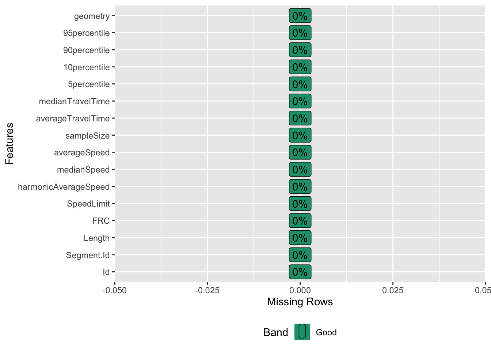
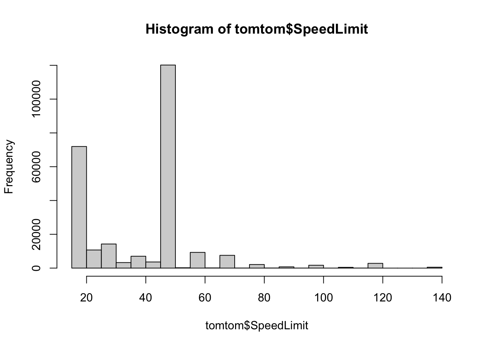
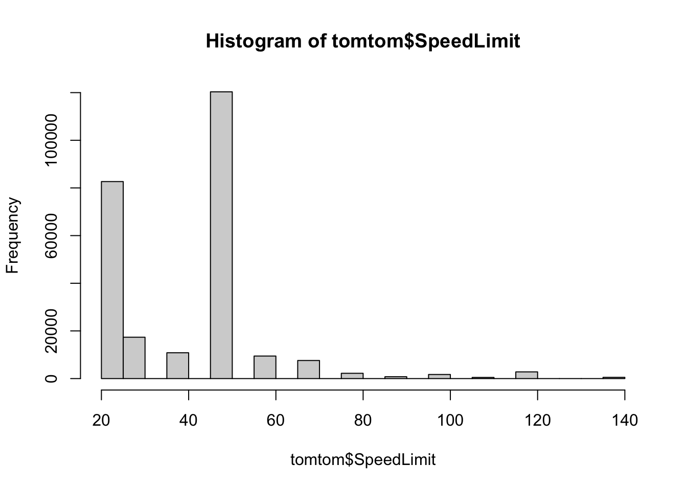
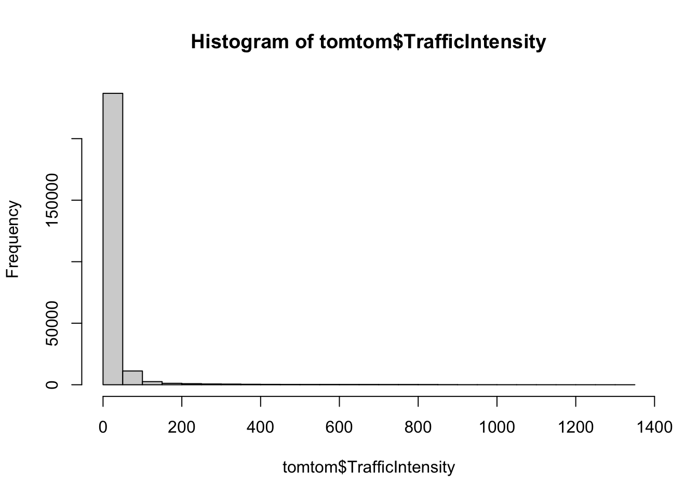

Go back to the About page.
In this section, we construct the metric graph for the road network. The graph is the foundation for all subsequent analyses.
Let us start by setting some global options for all code.
Load the necessary libraries.
# Load libraries
library(MetricGraph)
library(ggplot2)
library(sp)
library(sf)
library(mapview)
library(dplyr)
library(qs)
library(tidyr)
library(leaflet)
library(DataExplorer)
library(here)
library(rmarkdown)
library(grateful) # Cite all loaded packagesHere we start with prepared data from TomTom, a commercial traffic data provider. The data includes road segments with attributes such as length, speed limit, and traffic intensity. We will filter and transform this data to create a graph for the city center of Ahsa. The `FRC’ stands for the Functional Road Class, which is a classification of roads based on their importance and function. The FRC ranges from 1 to 7, with 1 being the highest class (e.g., highways) and 7 the lowest class (e.g., local roads). We start by checking the data structure and missing values.
# Load data
load(here("Data/tomtom_ahsa_extended.RData"))
tomtom <- data
rm(data)
# Convert FRC to numeric and plot missing values
tomtom$FRC <- as.numeric(tomtom$FRC)
plot_missing(tomtom)

## [1] 50 70 40 45 31 18 61 60 28 19 24 29 25 68 80 30 100 20
## [19] 110 36 23 90 140 27 32 37 21 33 120 52 57 22 44 49 34 26
## [37] 47 65 35 42 53 39 43 58 38 67 41 48 46 62 64 59 139 54
## [55] 55 86 56 77 101 95 96 97 85 51 98 88 92 102 76 99 93 91
## [73] 63 83 74 81 75 84 82 115 73 71 113 114 112 94 69 66 111 79
## [91] 87 104 105 78 72 121 89 107 103 109The speed limit values are not rounded to the nearest 10, which is common in practice. We will round the speed limit values and compute the traffic intensity based on the speed limit, road length, and functional road class (FRC). The traffic intensity is a measure of traffic flow on a road segment, which we will use as a covariate in the LGCP model.
# Round to the nearest tenth
tomtom$SpeedLimit <- round(tomtom$SpeedLimit / 10) * 10
hist(tomtom$SpeedLimit)
## [1] 50 70 40 30 20 60 80 100 110 90 140 120# Compute traffic density
compute_traffic_intensity <- function(data) {
data$FRC[data$FRC == 0] <- 1 # Avoid division by zero
data$TrafficIntensity <- (data$SpeedLimit / data$FRC) * log(data$Length) # using Chaudhuri et al. (2023) formula
return(data)
}
tomtom <- compute_traffic_intensity(tomtom)
hist(tomtom$TrafficIntensity)
# Load polygon boundary for the city center
polygon <- st_read(here("Data/center_ahsa_polygon.geojson")) %>%
st_cast("POLYGON") %>%
st_transform(crs = st_crs(tomtom))## Reading layer `center_ahsa_polygon' from data source
## `/Users/saduakd/Documents/MetricGraphLGCP/Data/center_ahsa_polygon.geojson'
## using driver `GeoJSON'
## Simple feature collection with 1 feature and 1 field
## Geometry type: MULTIPOLYGON
## Dimension: XY
## Bounding box: xmin: 49.43056 ymin: 25.26735 xmax: 49.79261 ymax: 25.57398
## Geodetic CRS: WGS 84# Visualize the polygon boundary
leaflet() %>%
addProviderTiles("CartoDB.Positron") %>%
addPolygons(data = polygon, color = "red", fill = FALSE, weight = 2)# Filter and transform TomTom data for the city center
filter_transform_tomtom <- function(data, polygon) {
data %>%
dplyr::select(Segment.Id, Length, FRC, SpeedLimit, averageSpeed, sampleSize,
TrafficIntensity, geometry, "10percentile", "90percentile") %>%
mutate(Length_km = Length / 1000,
density = sampleSize / Length_km,
density_per_hour = density / 24) %>%
st_transform(crs = st_crs(data)) %>%
st_filter(x = ., y = polygon, .predicate = st_within)
}
tomtom_sub <- filter_transform_tomtom(tomtom, polygon)
# Inspect the filtered data
str(tomtom_sub) # [178,807 × 14] graph with FRC7## sf [178,807 × 13] (S3: sf/tbl_df/tbl/data.frame)
## $ Segment.Id : chr [1:178807] "-16820004539157" "-16820004539174" "-16820004539180" "-16820004539210" ...
## $ Length : num [1:178807] 143.8 63 200.3 128.8 53.6 ...
## $ FRC : num [1:178807] 7 7 7 7 7 7 7 6 7 7 ...
## $ SpeedLimit : num [1:178807] 50 50 50 50 50 50 50 50 50 50 ...
## $ averageSpeed : num [1:178807] 20.8 33.9 19.1 15.2 17.3 ...
## $ sampleSize : int [1:178807] 427 289 478 751 720 1038 412 1535 97 1435 ...
## $ TrafficIntensity: num [1:178807] 35.5 29.6 37.9 34.7 28.4 ...
## $ geometry :sfc_LINESTRING of length 178807; first list element: 'XY' num [1:2, 1:2] 49.7 49.7 25.4 25.4
## $ 10percentile : int [1:178807] 11 6 9 7 10 12 6 13 5 6 ...
## $ 90percentile : int [1:178807] 30 74 30 23 25 37 24 35 45 25 ...
## $ Length_km : num [1:178807] 0.1438 0.063 0.2004 0.1288 0.0536 ...
## $ density : num [1:178807] 2970 4587 2386 5832 13433 ...
## $ density_per_hour: num [1:178807] 123.7 191.1 99.4 243 559.7 ...
## - attr(*, "sf_column")= chr "geometry"
## - attr(*, "agr")= Factor w/ 3 levels "constant","aggregate",..: NA NA NA NA NA NA NA NA NA NA ...
## ..- attr(*, "names")= chr [1:12] "Segment.Id" "Length" "FRC" "SpeedLimit" ...We recommend to use the high-precision data, when available, to
construct large-scale graphs. This will ensure fast and accurate graph
construction. Given such high-precision, one can safely put the
merge_close_vertices argument in the
graph_components$new() to FALSE. This will
prevent the merging of close vertices, and therefore speed up
significantly the graph construction and also reduce computational
memory load.
# New way to directly build the graph
system.time({
graph = graph_components$new(edges = tomtom_sub, merge_close_vertices = FALSE, verbose=2)
})
# user system elapsed
# 87.534 0.800 88.723
graph$n
# Get the largest connected component
graph_ahsa <- graph$get_largest()
# Save the graph object with high compression
qsave(graph_ahsa, "Data/graph_weighted_7FRC_city_center.qs", preset = "high")We further prune the graph, i.e. remove the vertices with degree 2 without changing the graph structure. This will reduce the number of vertices and edges, and speed up the computation of the LGCP model. Note that, here we add the edge weights to the graph object, because we will use them as spatial covariates in the LGCP model. This will ensure the dimensional compatibility between the graph and the covariates. Since edge weights are added beforehand, pruning will involve comparison of the weights on edges, and ensure we are only removing vertices with degree 2 that have the same edge weights. For practical purposes, this means that we are checking if the road is of the same type and has the same speed limit, and only then we remove the vertices.
graph <- qread("Data/graph_weighted_7FRC_city_center.qs")
graph$set_edge_weights(weights = graph$get_edge_weights() %>% select(FRC, SpeedLimit))
graph$get_edge_weights()
system.time({
graph$prune_vertices(verbose=2)
})
# user system elapsed
# 390.751 41.643 434.038
# Save the graph object with high compression
qsave(graph, "Data/graph_weighted_7FRC_city_center_pruned.qs", preset = "high")After constructing the graph, we need to set up the mesh for the LGCP model. Even though we do not use the finite element method (FEM) for approximating the the Whittle–Matérn field \(u(s)\), we still need to set up the mesh for LGCP model.
The mesh is built with a resolution of 100 meters. Before building the mesh, we add the data as observations to the graph to avoid placing mesh nodes too close. We also normalize the data and set a tolerance of 0.6 (600 meters) for the duplicated observations.
# Build and setup mesh for graph
build_mesh <- function(graph, h = 0.1) {
graph$build_mesh(h=h)
graph$compute_fem()
}
# Load graph and build mesh
setup_graph_mesh <- function() {
graph <- qread("Data/graph_weighted_7FRC_city_center_pruned.qs")
data <- qread("Data/data_all_reasons_with_distances_7FRC.qs")
# Add as observation to avoid placing mesh nodes too close
rem.obs <- graph$add_observations(data, normalized = TRUE, tolerance = 0.6,clear_obs = TRUE,
duplicated_strategy = "jitter")
graph$observation_to_vertex(verbose = 1)
build_mesh(graph)
qsave(graph, "Data/graph_mesh_pruned_100m_7FRC_ver2.qs")
}
system.time({
setup_graph_mesh()
})
# user system elapsed
# 896.174 9.031 905.481 The graph is now ready for the LGCP model fitting. The additional step is to prepare the spatial covariates for the LGCP model. We will cover this in the next section. If you are interested in the LGCP model fitting without covariates, please refer to the Model 1 page.